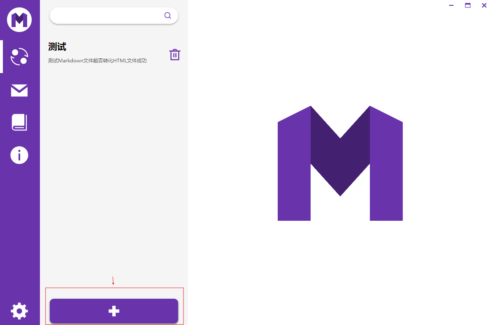
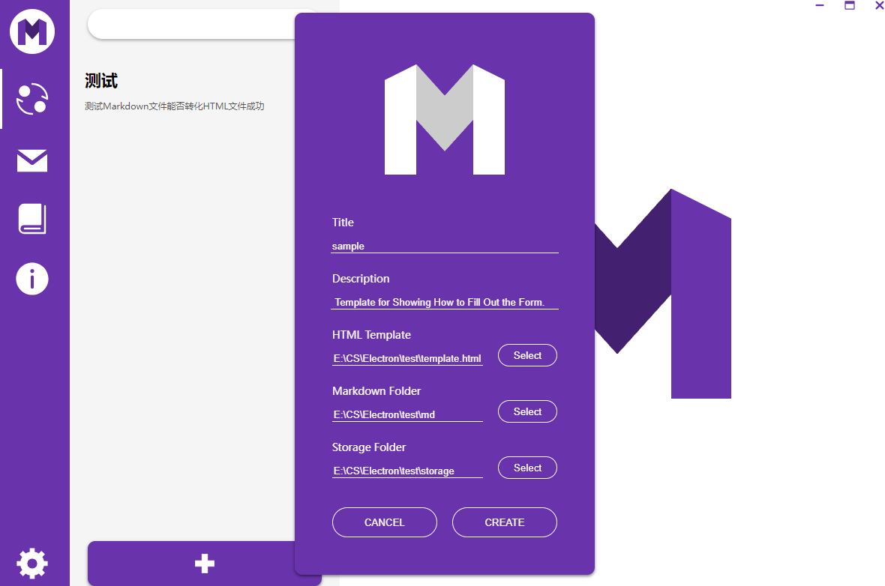
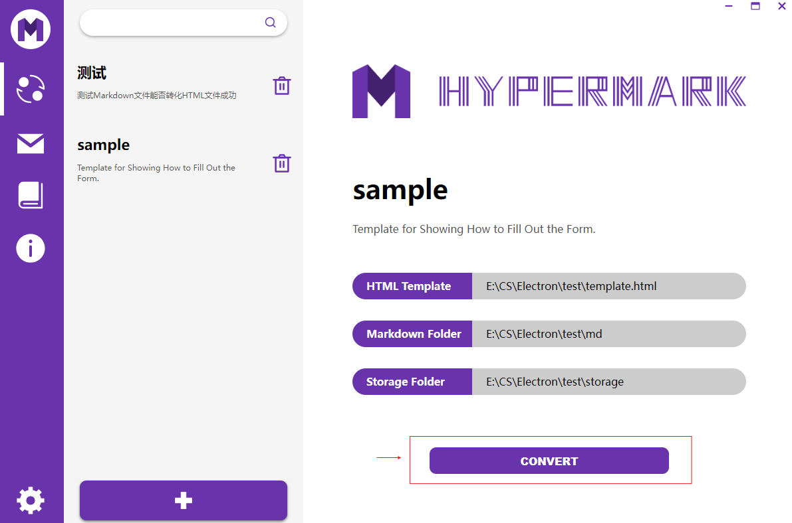

Hypermark can batch convert Markdown files into HTML files, making it a very convenient desktop tool for applications such as personal website construction. However, it is recommended to read the following instructions before using it to help you use this software more effectively.
00 // PREPARATION
Before converting the files, you need to ensure that you have an HTML file as a conversion template, a folder containing the Markdown files you wish to convert, and an empty folder to store the converted HTML files.
It should be noted that you need to select the position in the HTML template file where you want to inject the Markdown content and mark the injection interface. The injection interface code is as follows.
01 // SOFTWARE FUNCTIONS
After completing the preparations, open Hypermark. In the left sidebar, there are a total of five icons from top to bottom: the CONVERSION module, the CONTACT module, the INSTRUCTIONS module, the ABOUT module, and the SETTINGS module.
The CONVERSION module is responsible for the conversion functions of Hypermark, and all conversions are completed within this module. In the conversion module, you can convert Markdown files into HTML files and also save the conversion information as a template for batch use, allowing for repeated application.
The CONTACT module provides various contact methods of the author. If you have any needs or feedback, you can contact the author using the provided contact details, and the author will respond at the earliest possible opportunity.
The INSTRUCTIONS module explains the usage of this application. Completing the tutorial will allow you to easily use Hypermark.
The ABOUT module primarily outlines information related to Hypermark, such as the author’s introduction, development history, and other relevant details.
The SETTINGS module primarily provides options for configuring certain features; however, in earlier software versions, there are currently no configurable items available.
02 // CONVERSION TEMPLATE CREATION
Enter the conversion module, click the “Add Template” button, and proceed to the template creation form.
Fill in the conversion template’s name and description according to your preferences, and select three file paths:
The file path for the HTML file that serves as the conversion template.
The folder path where the Markdown files to be converted are located.
The folder path where the final converted HTML files will be stored.
Click on the template to see the detailed information of the template you have created. If everything is correct, you can click the “Convert” button to proceed with the file conversion.
At this point, the file conversion is complete.